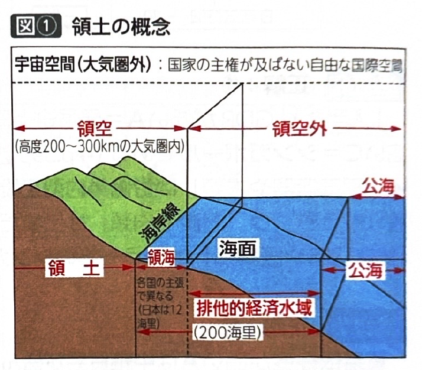
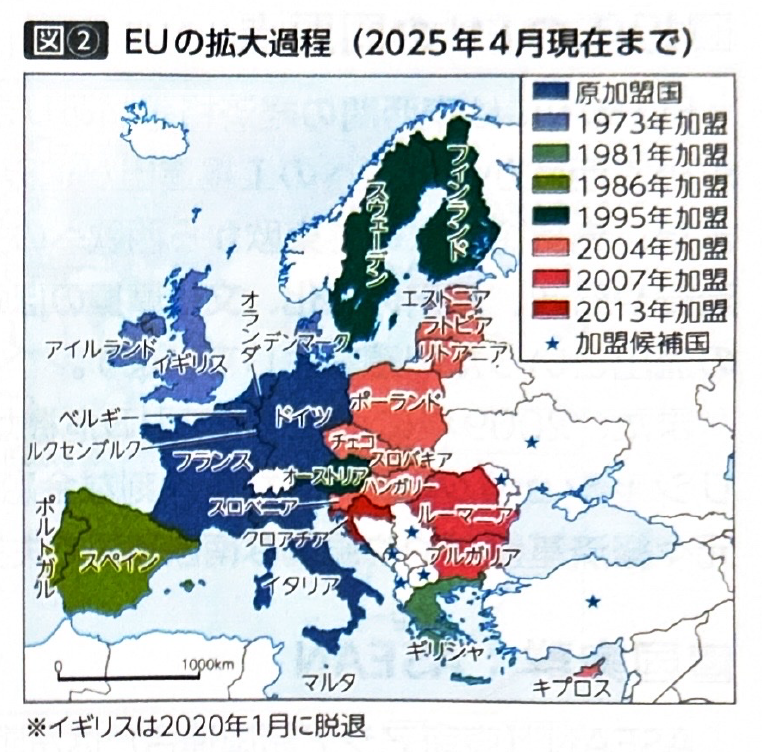
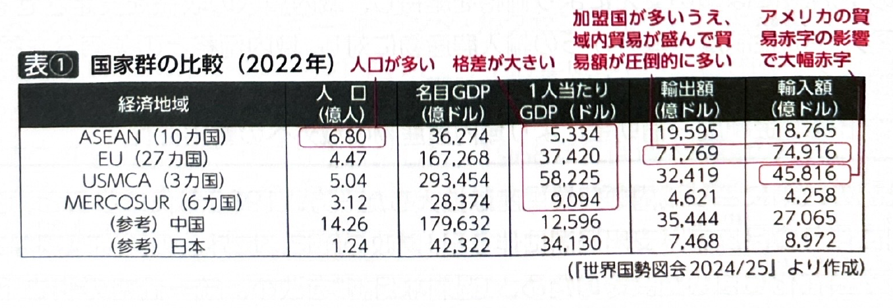
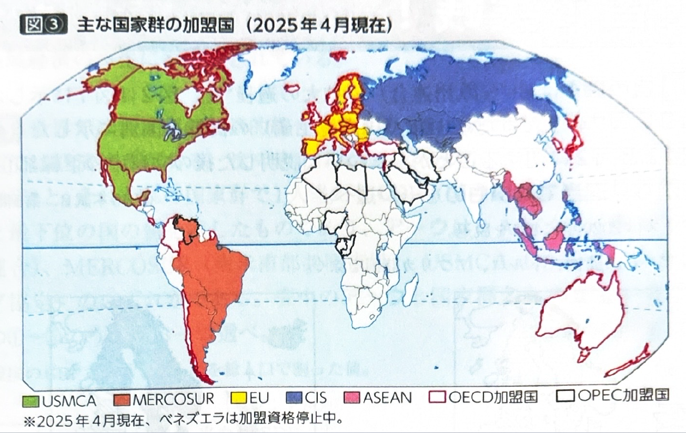

第9章 国家 国家群 - 国家・国家群
ポイント総復習
1. 国家の領域と国境
国家は「主権、領域、国民」の三要素からなります。
- 領海：海岸線から12海里とする国が多いです。
- 排他的経済水域（EEZ）：領海を除く海岸線から200海里までの水域。沿岸国に水産資源・鉱産資源の独占的管理権が認められています。
- 国境の分類：
- 自然的国境：海洋、河川、山脈などを利用した国境。
- 人為的国境：経線や緯線などを利用して人為的に引かれた国境（アフリカや北米などに多い）。

2. EU（欧州連合）の発展と政策
ヨーロッパにおける国家統合の歴史と、現在のEUの主要な政策を押さえましょう。
| 年 | 出来事・組織名 | 内容・特徴 |
|---|---|---|
| 1952年 | ECSC（欧州石炭鉄鋼共同体） | 仏、伊、旧西独、ベネルクス三国で設立。重要資源の共同管理が目的。 |
| 1967年 | EC（欧州共同体）設立 | ECSC、EEC（経済）、EURATOM（原子力）の3組織を統合。翌年に関税同盟（域内関税撤廃）を実現。 |
| 1993年 | EU（欧州連合）発足 | 人・物・資本・サービスの移動を自由化する市場統合が実現。 |
| 1995年 | シェンゲン協定発効 | 協定国間の国境管理を廃止。EU未加盟のスイスやノルウェーも加盟している。 |
| 1999年 | 単一通貨ユーロ導入 | ※スウェーデン、デンマークなど全加盟国が導入しているわけではないことに注意。 |
【共通農業政策】
EU（EC）を代表する政策で、域内の農業保護を目的に導入されました。統一価格での買い支え（価格支持政策）や輸入課徴金、輸出補助金などが行われましたが、生産過剰や財政圧迫などの問題が生じたため、近年は直接所得補償や環境保全重視へと方針転換しています。

3. EUが抱える課題
- 東西の経済格差：2000年代以降の東欧諸国の加盟により、東西の結びつきが強まりました。しかし、安価な労働力を求めて西欧から東欧へ工場が進出することで、西欧では産業の空洞化が生じています。また、東欧から西欧への労働力移動により、西欧での雇用悪化や、東欧での人材流出（頭脳流出）も問題です。
- 金融危機：2009年にギリシャの財政危機が表面化（ギリシャショック）し、ユーロが暴落。南欧諸国を中心に失業率が大幅に上昇しました。
4. 世界の主な国家群
- ASEAN（東南アジア諸国連合）：1967年結成（当初は対共産圏）。現在は10か国。AFTA（自由貿易地域）により域内関税が撤廃され、貿易が活発です。
- USMCA（米国・メキシコ・カナダ協定）：NAFTAから移行し2020年発効。域内関税が撤廃されています。
- MERCOSUR（南米南部共同市場）：ブラジル、アルゼンチンなど。域内貿易は活発ですが、経済規模が小さいため域外との貿易比率も高いです。


基礎問題（理解度チェック）
Q1. 国家の領域と国境について、空欄を埋めなさい。
国家の領域のうち、海岸線から200海里までの水域（領海を除く）を
といい、沿岸国に水産資源や鉱産資源の独占的管理権が認められている。また、国境のうち経線や緯線などを利用して引かれたものを
といい、アフリカなどに多くみられる。
Q2. EUの歴史について、空欄を埋めなさい。
ヨーロッパでは1952年に重要資源の共同管理を目的とする
が設立された。その後1967年に3つの組織が統合して
となり、1993年には人や物などの移動を自由化する市場統合を実現した
が発足した。
Q3. EUの政策と課題について、空欄を埋めなさい。
ヨーロッパにおいて、協定国間の国境管理を廃止した協定を
という。EUの代表的な政策である
は、域内農家の保護を目的に実施されたが、生産過剰などの問題から近年は直接所得補償などに方針転換している。また、2009年に
で財政危機が表面化すると、単一通貨ユーロが暴落する事態となった。
Q4. EUでは1999年に単一通貨ユーロが導入されたが、スウェーデンやデンマークなどのように、EUに加盟していてもユーロを導入していない国が存在する。
Q5. ヨーロッパでは2000年代以降、東欧諸国のEU加盟が進んだことで、安価な労働力を求めて東欧から西欧への工場進出が進み、東欧で産業の空洞化が生じる問題が起きている。